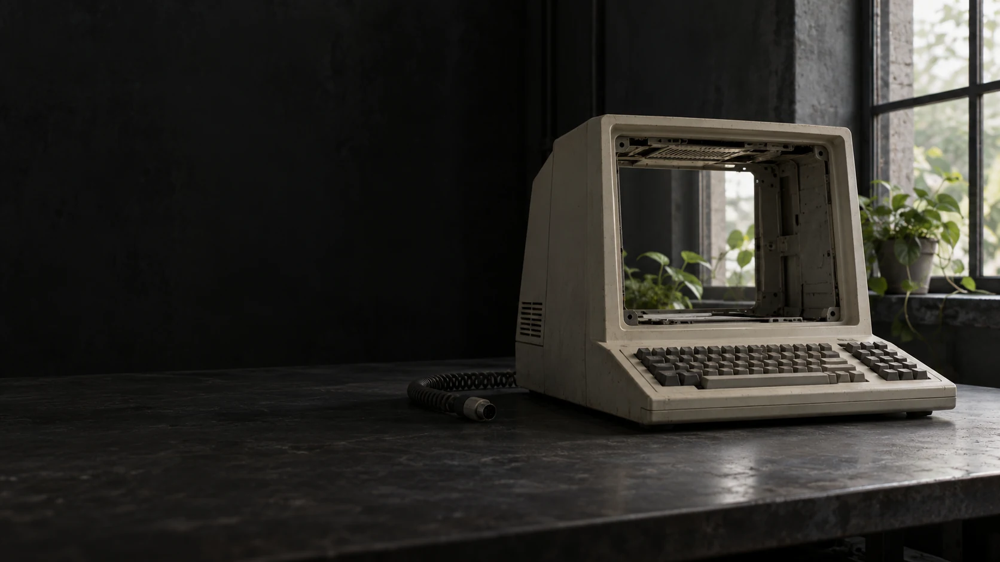

The World That Was.
An art collection for what comes next.
The stories. The objects.
The things no server should own.
Still here.
Something familiar.
With a different future.
The Last Login
The doorway outlasted the password.
THIS WEBSITE
CAN DISAPPEAR.
The art shouldn't.
We left our lives in places we didn't own. Our photographs in a cloud. Our conversations in an inbox. Our communities inside a feed.
AFTERLIGHT imagines the doors opening. A screen becomes a passage. A vault becomes a garden. A locked cabinet becomes a place to read.
We're making the collection so the image and its story live on Koinos itself. The owner holds the token. Anyone can read the artwork's data and build another way to see it.
See the working on-chain experimentKeep a piece of the world.
100 artworks. Initial listings planned at 500 KOIN each.The collection is in preparation. Sales are not open yet.